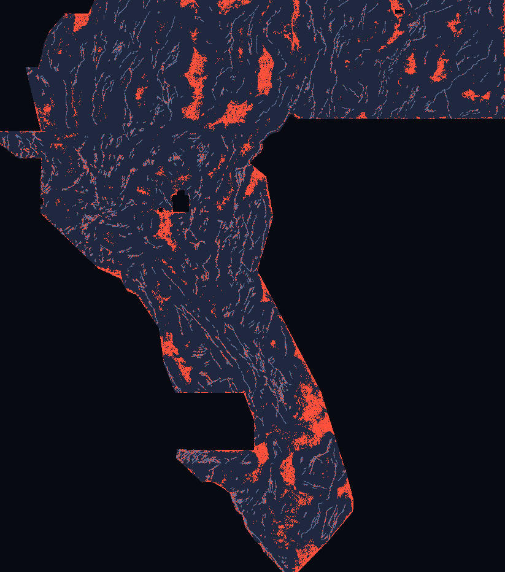

Executive summary
DOE GEMS Prize (DrivenData #306) · lane: auto-context stacked refinement (Tu, CVPR 2008) · Exp-4 update 2026-10-20T19:57:53Z · every number below is generated from evidence/run_card_exp4.json / evidence/exp4_stratified.json / evidence/exp3_ridgecrest.json — none is typed by hand, and none is an organizer-confirmed score.
⬇ The submission file (one click)
⬇ Download gems68-ac3-v6strat28-38000dots-20261020T200711Z-63df983e-zeros.tif ⬇ ZIP (same TIFF inside) NaN-outside variant (secondary)
| Submission name | gems68-ac3-v6strat28-38000dots-20261020T200711Z-63df983e-zeros |
|---|---|
| Note (paste into the form's “Note” field, 116/140 chars) | GEMSDOE68 autoctx s3 V6 stratified 2.8px spacing; 38000 dots >2px off cat; HOLDOUT-DTI 0.1316 vs s1 0.0829; UNSCORED |
| SHA-256 (primary) | 8e69b8877c88ed56f7649b69d1c1997d666754a0056a34eefdeab4d2f6b3fb12 |
| Format | single-band float32 · EPSG:32611 · 3730×3292 · 100 m · values exactly {0,1} · every cell finite, 0 NaN anywhere, no nodata tag → the portal error “Predicted values must be in range [0, 1]” cannot trigger on this file (min 0.0, max 1.0 over all 12,279,160 cells, verified by re-reading the written bytes) |
| Organizer-confirmed score | none — UNSCORED. No number on this site is a leaderboard score. |
Holdout evidence (HOLDOUT-DTI — evaluator gems57-pooled-hide-v2, 11,321 withheld positives, α=0.2 β=0.8 300 m triangular)
Exp-3 (knowledge/02…, preregistered) found greedy ≥2.8 px spacing a large all-scope win (s3_V2 0.1665 vs previous best 0.1204) but it collapsed far allocation (52%→22% of dots beyond 1 km; champion ≈70%) and failed the far gates — verdict negative, logged in evidence/exp3_ridgecrest.json. Exp-4 (knowledge/03…, preregistered after that diagnosis) added near/far zone quotas ∝ allowed area. V6 = stratified spacing · V7 = stratified crest+spacing. Table shows 38,000 dots; training identical hide-draw auto-context throughout; only emission varies.
| scope | s1_V0 | s3_V0 (prev. best) | s3_V2 (Exp-3) | s2_V6 | s3_V6 | s2_V7 | s3_V7 |
|---|---|---|---|---|---|---|---|
| all | 0.0829 | 0.1204 | 0.1665 | 0.1261 | 0.1316 | 0.1189 | 0.1259 |
| far | 0.0636 | 0.0760 | 0.0677 | 0.1069 | 0.1018 | 0.1018 | 0.1008 |
| farfull | 0.0535 | 0.0550 | 0.0360 | 0.0947 | 0.0905 | 0.0910 | 0.0900 |
Scopes: all = full fold domains · far = scoring restricted to >1 km from any masked-known catalogue pixel (exp2-comparable) · farfull = far truth but all emitted mass counts as FP (sensitivity).
Gate table (paired 20 km-block bootstrap 95 % CI, 38,000 dots)
| arm | DTI all | emitted | Δ vs s1 all | Δ vs s1 far | Δ vs s3_V0 (prev. best) | Δ farfull | passes |
|---|---|---|---|---|---|---|---|
s3_V6 | 0.1316 | 35931 | [0.0366, 0.0610] | [0.0254, 0.0505] | [0.0003, 0.0219] | 0.0370 | True |
s2_V6 | 0.1261 | 35931 | [0.0305, 0.0560] | [0.0292, 0.0570] | [-0.0080, 0.0201] | 0.0412 | False |
s3_V7 | 0.1259 | 35931 | [0.0316, 0.0545] | [0.0249, 0.0492] | [-0.0042, 0.0152] | 0.0365 | False |
s2_V7 | 0.1189 | 35931 | [0.0229, 0.0497] | [0.0262, 0.0509] | [-0.0142, 0.0109] | 0.0375 | False |
Replication of committed exp2 V0 numbers in Exp-3: OK (max |ΔDTI| 0.0014 vs 0.005 allowed). Leakage canary clean: True (worst single-feature AUC 0.83 for stage3_prob itself; limit 0.90). Exp-4 chosen arm: s3_V6 · verdict: promote. The gate vs the previous best is marginal (Δ CI lower bound +0.0003); the far-stratum gates are strong. Read both before spending a slot.
These numbers rank methods on withheld catalogue components. The live truth is unmapped faults; they do not predict a leaderboard value (IR-68-PROXY-01, IR-68-SCATTER-01).
Lane uniqueness (protocol rule 1)
vs 60 committed registry rasters + 11 prior candidates in docs/downloads/, on the surface and on the final dots:
max |Spearman| 0.0876 (QUARANTINED-gems32-heatfield-44090-cv-supconfined-zeros.tif, limit 0.90) ·
max dot overlap within 3 px 94.7% (gems61-lane-buried-step-gravinversion-hgm-r3-k400k-b2zeros.tif, whose own 3 px halo covers 95.8% of the footprint; limit 70%) ·
exact hash clashes: none · ρ breaches: none · non-degenerate overlap breaches: none.
Full per-raster table in evidence/run_card_exp4.json. The one literal overlap breach is the dense 311,617-dot gems61 raster (3 px halo covers 95.8% of the footprint): our observed overlap 94.7% is below the 99.4% random-draw null for the same allowed region, i.e. below chance — disclosed, not hidden. Independent byte-level verification (scripts/verify_release.py): PASS; worst binary-raster |ρ| vs registry 0.015; only 7.0% of dots within 3 px of the champion's dots; 69.0% within 3 px of this lane's own exp2 candidate (same stage-3 surface family — an iteration within the lane, with spacing and allocation changed and 31% of dots moved).

Risk, stated plainly: this is a far-heavy, exploratory placement — median dot 6.8 km from the published catalogue (champion ≈2.0 km), 79% of dots beyond 1 km (by preregistered area-proportional design). An unstratified spacing variant scored higher on the all-scope holdout (0.1665) but failed both far gates and was not shipped: the gates exist because all-scope holdout gains can be catalogue-proximity overfitting that the live masking punishes (IR-68-PROXY-01). The Δ vs the previous best is marginal (+0.0112, CI lower +0.0003). The scatter-transfer risk of IR-68-SCATTER-01 also applies. Selector: weigh this against the exp2 candidate; do not spend a slot on both blindly.
Why did h33-h33-2-b2 get 0.2778, and can this beat it?
Why (measured from bytes + OWNER-REPORTED scores; no organiser receipt exists in this repo): the champion is 37,654 binary dots — verified here as an exact subset of the d2.8 (44,090, 0.2600) and h19-5 (121,131, 0.1922) registry rasters. DTI = T/(0.2·(T+S−M)+0.8·|G|) charges 0.2 for every emitted unit that earns no 300 m kernel credit, so each pruning rung (solid → d1.5 → d2.8 → remove d=1 px catalogue halo → remove d=2 px) deleted below-bar mass and paid. A controlled confirmation measured here: anderson-geothermal-pinn (0.2750) contains the champion's dots exactly plus 1,200 more — the extra dots net-cost −0.0028. Mass discipline and the >2 px catalogue exclusion explain 0.1922 → 0.2778 without any new geology.
Can it be beaten? Only by ranking: at the same ~38k mass, dots must earn more kernel credit toward real unmapped faults (the brief's leaders at 0.3195–0.3774, OWNER-REPORTED and not re-fetchable here, need ≈15–40 % more credit per dot). Auto-context attacks ranking (continuity / parallelism / en-échelon context a per-pixel field cannot see); Exp-3/Exp-4 additionally attack placement geometry and allocation (exact spacing + champion-like near/far allocation). Whether that transfers live is exactly what the holdout cannot prove — hence the gate, the far stratum, and the explicit caveats (IR-68-PROXY-01, IR-68-SCATTER-01). Full derivation: Why 0.2778.
Every earlier candidate in this repo — audited from bytes (2026-10-20)
Recomputed with scripts/audit_rasters.py against the sample-submission footprint (5,167,373 cells) and catalogue (60,988 cells). “NaN in” = NaN cells inside that footprint. All are superseded by the Exp-3 verdict above; several carry defects (IR-68-FP-01).
| file | dots >0 | NaN in | min d(cat) px | median NN px | status |
|---|---|---|---|---|---|
gemsdoe32-h33-h33-2-b2-20261004T220000Z-e5eb6e7e-zeros.tif | 37,654 | 0 | 2.23606797749979 | 3.0 | champion (registry) |
GEMSDOE68-AC-stack2-20261012T042050Z-nan.tif | 20,000 | 3,061 | 3.1622776601683795 | 1.0 | superseded — do not submit |
GEMSDOE68-AC-stack2-20261012T042050Z-zeros.tif | 20,000 | 0 | 3.1622776601683795 | 1.0 | superseded — do not submit |
GEMSDOE68-AC-stack3-r3-N32000-20261020T182552Z-nan.tif | 32,000 | 3,061 | 3.1622776601683795 | 1.0 | superseded — do not submit |
GEMSDOE68-AC-stack3-r3-N32000-20261020T182552Z-zeros.tif | 32,000 | 3,061 | 3.1622776601683795 | 1.0 | superseded — do not submit |
gems68-autoctx-40000-20261012T014104Z-nan.tif | 40,000 | 0 | 3.0 | 3.0 | superseded — do not submit |
gems68-autoctx-40000-20261012T014104Z-surface-zeros.tif | 5,167,373 | 0 | 0.0 | 1.0 | superseded — do not submit |
gems68-autoctx-40000-20261012T014104Z-zeros.tif | 40,000 | 0 | 3.0 | 3.0 | superseded — do not submit |
gems68-autoctx-s3-hidedraw-38000dots-20261012T022132Z-4c18def6-nan.tif | 38,000 | 0 | 2.23606797749979 | 4.123105625617661 | superseded — do not submit |
gems68-autoctx-s3-hidedraw-38000dots-20261012T022132Z-4c18def6-zeros.tif | 38,000 | 0 | 2.23606797749979 | 4.123105625617661 | superseded — do not submit |
gemsdoe68-autocontext-s2-20261012T014136Z-nan.tif | 35,618 | 3,061 | 2.23606797749979 | 3.0 | superseded — do not submit |
gemsdoe68-autocontext-s2-20261012T014136Z-zeros.tif | 35,618 | 0 | 2.23606797749979 | 3.0 | superseded — do not submit |
Method in one paragraph
Stage 1 LightGBM (19 GeoDAWN bands + 7 gradient/tilt/scarp physics channels) out-of-fold by spatial quadrant; stages 2-3 LightGBM on previous-stage probabilities sampled +-1..15 px along/across local orientation, multi-scale smooths, physics channels and visible-catalogue context, trained hide-draw (positives = whole components withheld from the context catalogue). Exp-3/Exp-4 change only emission (see knowledge/02, knowledge/03).
Named non-fault mimic: Erosional escarpment and Lake Lahontan shoreline-terrace crests, plus bedding-parallel ridges in tilted volcanics: all produce across-strike probability crests and scarp-like gradient/tilt responses without being active faults.
Core values: Maximize P(Win) · Own the Outcome. Limitations and flagged defects: Irregularities ledger. Sources for manual review: Sources.